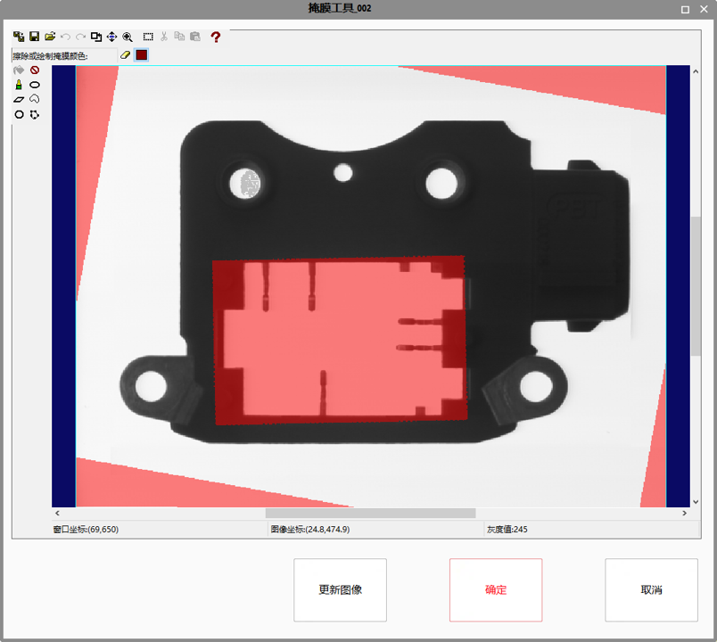

掩膜功能：输入图像中不感兴趣的部分屏蔽掉；
填充功能：可以根据设定灰度值或者三通道填充值对掩膜区域进行填充；
| 分类 | 参数名称 | 参数描述 |
|---|---|---|
| 属性窗口 | 图像类型 | 可选类型包括：灰度图像和彩色图像 |
| 输出二值化图像 | 选择“是”，输出图像为一副二值化图像，掩膜区域为黑色，其余部分为白色 | |
| 是否填充掩膜区域 | 选择“是”，可以对掩膜区域进行相关灰度值填充，修改掩膜区域颜色 | |
| 掩膜区域填充值 | 当选择待灰度图像时，为填充的灰度值 | |
| 掩膜区域红色通道填充值 | 当选择待彩色图像时，为红色分量通道填充值 | |
| 掩膜区域绿色通道填充值 | 当选择待彩色图像时，为绿色分量通道填充值 | |
| 掩膜区域蓝色通道填充值 | 当选择待彩色图像时，为蓝色分量通道填充值 | |
| 图像窗口 | 输入图像 | 待掩膜的图像 |
| 输入图像RGB | 待掩膜的彩色图像 | |
| 数据链 | 输入图像 | 待掩膜的图像 |
| 输入图像RGB | 待掩膜的彩色图像 | |
| 二维线性变换 | 二维线性变换是指目标相对于模板的平移、旋转、缩放变换。掩膜区域接受二维线性变换以确保实时图像的掩膜区域保持相对固定。 | |
| 高级界面 | 更新图像 | 获得待掩膜的图像。 |
| 确定 | 此次掩膜生效。 | |
| 取消 | 此次掩膜无效，仍然使用上次的掩膜模板。 |
| 分类 | 参数名称 | 参数描述 |
|---|---|---|
| 监视窗口 | 输出图像 | 输出图像的宽度、高度、像素大小。 |
| 输出图像RGB | 输出彩色图像的宽度、高度、像素大小。 | |
| 执行结果 | 工具执行结果。 | |
| 执行时间 | 工具执行时间。 | |
| 图像窗口 | 输出图像 | 对输入图像执行掩膜之后的结果图像。 |
| 输出图像RGB | 对彩色输入图像执行掩膜之后的结果图像。 | |
| 执行结果 | 显示工具执行结果，执行成功显示“OK”，执行失败显示“NG”，同监视窗口的执行结果参数。 | |
| 数据链 | 输出图像 | 对输入图像执行掩膜之后的结果图像。 |
| 输出图像RGB | 对彩色输入图像执行掩膜之后的结果图像。 |
掩模工具高级属性界面如图1所示，主要由控制、显示两部分组成。
控制部分主要是对掩模图像编辑相关部分的控制和图像显示的控制，包括控制工具条和绘制工具条；
显示部分则主要是显示参考图像和掩模图像，以及显示鼠标位置及相应位置上参考图像的象素值，包括显示控件和状态显示栏。

具体掩膜界面使用可以参考掩膜界面问号❓按钮对应的文档。
掩膜图像尽量小于512MB。若大于512MB提供两种方案：
方案1：将图像下采样，再显示绘制。绘制后，将掩膜图像再扩大为原始大小图像下采样就是绘制区域，但是精度略低（设置的掩膜图像精度略低，类似于之前掩膜图像精度是1像素；方案一像素精度是2像素），且耗时会有所增加。
方案2：将图截取一部分下来，再绘制掩膜图像，绘制后再把这部分粘贴到与输入图像大小一致的掩膜图像上。
参见“\Samples\掩膜工具.gvp”。